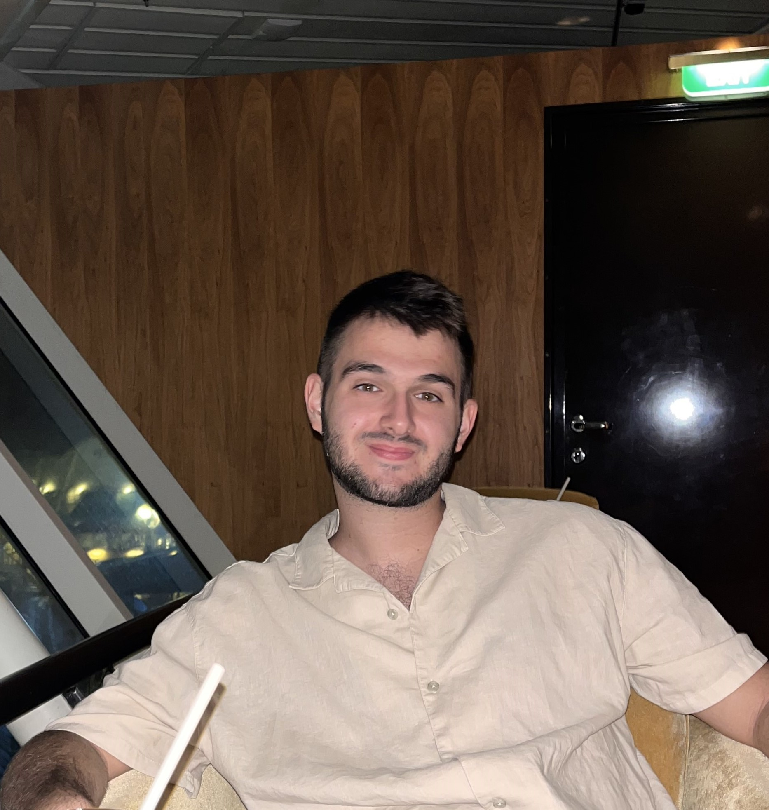

Ohad Griner
Software Engineer | Robotics Specialist | Team Leader
I'm Ohad Griner, an Experienced software engineer with a background in robotics, team leadership, and software engineering solutions.
I have a BS.c in computer science from the Open University

About
Passionate software engineer with experience in robotics, focusing on innovation and teamwork.
- Programming: Python, Linux
- Frameworks: ROS2
- Leadership: Team Management, Agile Development
Experience
- Team Leader, Robotics Software - (2024-Present)
- Led a team of developers working on autonomous systems.
- Designed and implemented ROS2-based solutions for projects.
- Software Engineer, Robotics Development – (2021-2024)
- Providing software solutions to robotics projects.
- BSc, Computer Science. The Open University – (2017-2021)
About
Passionate software engineer with experience in robotics, focusing on innovation and teamwork.